Animo
A ogni livello nuovo recuperi mezzo  .
.
In ogni discesa la principessa diventa più brava: sconfiggendo i nemici trova coraggio, col coraggio sale di livello e ogni livello accende una stella, un talento. Le stelle stanno nelle costellazioni, che si scelgono prima di scendere guardando il cielo dal cannocchiale.
Coraggio, livelli e talenti non ci sono finché la principessa non ha il Cannocchiale delle stelle: è un ricordo, il secondo della lavagnetta delle promesse, e da quando lo compri sta davanti alla porta finestra della sua stanza e vale in ogni discesa (anche in quella in cui l'hai comprato). Prima il coraggio non si raccoglie, sotto il mana non c'è la barra e la pausa si apre sulla discesa.
Ogni nemico sconfitto vale un po' di coraggio, una parte della sua vita (85%); un'arena ripulita ne vale 5 in più, un boss 50, una stanza-evento risolta (i cristalli, la sala della sfida, il cavaliere salvato) 15. I nemici chiamati da un boss non contano.
Il coraggio la fa salire di livello: lo dice la barra dorata sotto il mana, col numero del livello. Il livello n costa 50 + 20 × n di coraggio: il primo arriva dopo qualche arena, poi più o meno due a piano. A ogni discesa coraggio, livelli e talenti ricominciano da zero.
Ogni livello dà un punto, e un punto accende una stella. Si fa nella pausa (Esc), che si apre proprio sui talenti, ma solo a porte aperte: durante un'arena o un boss le stelle si leggono ma non si accendono. Ogni costellazione è una carta col suo cielo; passando sopra una stella col mouse, o andandoci col controller, accanto compare cosa fa e a che punto è.
.Come i doni, ogni stella accesa dà 0,25 di vita in più ai nemici che nascono dopo.
Guarda il cannocchiale e premi E: il cielo si apre a tutto schermo, con la stella polare in mezzo e attorno le costellazioni che hai visto, che girano piano. In basso ci sono i posti: scegli un posto, poi la costellazione da metterci. Resta lì anche per le discese dopo, finché non la cambi. Nel riepilogo al portone della discesa vedi con quali costellazioni parti.
All'inizio si vedono solo il Dardo e i Cuori; le altre compaiono nel cielo dopo un guardiano o un'impresa, e da quel momento restano nello slot. Anche i posti crescono andando avanti.
2 da subito, poi uno con l'obiettivo «A metà strada» (scendi 3 piani in una sola discesa), uno con l'obiettivo «Libera» (esci dal castello) e l'ultimo quando il castello si allunga: al massimo 5.
Sempre nel cielo, al centro: le sue stelle si accendono in qualunque ordine.
A ogni livello nuovo recuperi mezzo .
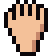
+0,25 danno.
Danno +0,25
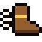
Cammini l'8% più veloce.
Velocità camminando +8%
Nel cielo da subito.
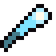
Il dardo va il 20% più veloce.
Velocità +20%
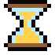
La pausa fra un dardo e l'altro è il 10% più corta.
Pausa fra un lancio e l'altro -10%
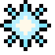
Chi è entro 5 metri da te prende il 40% di danno in più.
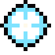
Chi è a più di 12 metri da te prende il 40% di danno in più.
Il primo dardo che colpisce un nemico illeso fa il doppio.
Danno ×1,4. Ma dopo un lancio il mana riparte solo dopo 1,5 secondi.
Danno ×1,4
Nel cielo da subito.
+1 massimo.
massimi +1
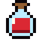
Pozioni di cura e fontane curano il 25% in più.
Forza delle cure +25%
Dopo un colpo preso, per 1 secondo nessuno ti ferisce.
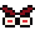
Dopo un colpo preso, per 4 secondi fai il 50% di danno in più.
Ogni 15 nemici sconfitti recuperi mezzo .
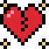
Con 1 o meno fai il doppio del danno e corri il 20% più veloce. Ma -1 massimo.
massimi -1
Compare nel cielo con l'obiettivo «Ammazzagiganti»: sconfiggi un guardiano.
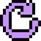
L'incantesimo torna pronto il 15% prima.
Ricarica di una carica -15%
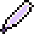
L'incantesimo costa il 20% di mana in meno.
Costo dell'incantesimo in mana -20%
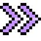
Una carica in più dell'incantesimo.
Cariche dell'incantesimo +1
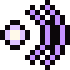
Il primo dardo dopo un incantesimo fa il 50% di danno in più.
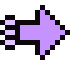
Ogni nemico sconfitto avvicina di mezzo secondo la prossima carica dell'incantesimo.
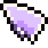
L'incantesimo non costa mana. Ma ha una carica in meno.
Costo dell'incantesimo in mana = 0Cariche dell'incantesimo -1
Compare nel cielo quando sconfiggi per la prima volta questo guardiano: Mago del fuoco.
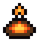
Chi brucia brucia 1 secondo in più.
Durata del fuoco +1 s
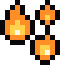
Chi muore bruciando dà fuoco a chi gli sta vicino.
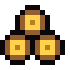
Chi brucia prende il 25% di danno in più dai dardi.
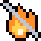
Il fuoco non ti brucia più.
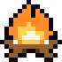
Chi muore bruciando scoppia e ferisce chi gli sta intorno. Anche te, se sei vicina.
Compare nel cielo quando sconfiggi per la prima volta questo guardiano: Golem di cristallo.
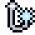
I doni del ghiaccio escono il doppio delle volte.
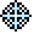
Il gelo dura 1 secondo in più.
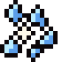
Un nemico gelato con meno di un quinto della sua vita va in frantumi.
Chi è gelato prende il 50% di danno in più.
Chi è gelato va più piano: al 25% invece che al 40%.
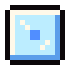
Ogni dardo gela. Ma fa il 30% di danno in meno.
Danno ×0,7
Compare nel cielo quando sconfiggi per la prima volta questo guardiano: Mostro sotto il letto.
I doni del sonno escono il doppio delle volte.
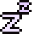
Il sonno dura mezzo secondo in più.
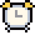
Il colpo che sveglia chi dorme fa il doppio.
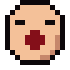
Chi si addormenta fa addormentare chi gli sta vicino.
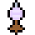
Ghiaccio e sonno: un dardo ogni 4 invece che ogni 5.
Ghiaccio e sonno: un dardo ogni -1
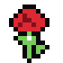
Il sonno dura il doppio. Ma i boss non si addormentano più.
Compare nel cielo con l'obiettivo «Parata»: para 10 colpi con gli scudi.
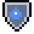
Ogni colpo parato con lo scudo ti ridà 20 mana.
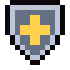
Ogni scudo che imbracci regge un colpo in più.
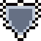
Chi colpisce il tuo scudo si fa male: 3 di danno.
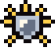
Chi colpisce il tuo scudo resta accecato per 3 secondi.
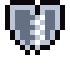
Quando lo scudo si spezza, per 2 secondi nessuno ti ferisce.
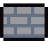
A ogni piano imbracci lo scudo di legno. Ma ogni scudo regge un colpo in meno.
Compare nel cielo con l'obiettivo «Nessuna porta mi ferma»: ripulisci 5 stanze-arena in una sola discesa.
A porte chiuse cammini il 10% più veloce.
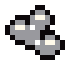
Nelle arene i nemici escono dal fumo mezzo secondo più tardi.
Ritardo dei nemici dal fumo +0,5 s
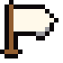
Ogni ondata finita ti ridà mezzo .
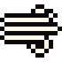
Ogni ondata finita ti ridà una carica dell'incantesimo.
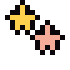
Dopo ogni ondata, per 2 secondi i dardi non costano mana.
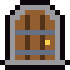
A porte chiuse fai il 30% di danno in più. Ma fuori dalle arene il mana torna la metà più piano.
Compare nel cielo quando sconfiggi per la prima volta questo guardiano: Troll.
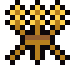
I nemici lasciano una promessa il 50% più spesso.
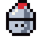
Ogni cavaliere accasciato ti lascia una promessa in più.
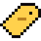
Al negozio tutto costa una promessa in meno.
Sconto al negozio, in promesse +1
Le arene lasciano una chiave dorata tre volte più spesso.
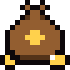
Ogni boss sconfitto lascia due promesse.
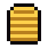
Ogni promessa che hai in tasca dà il 2% di danno in più, fino al 40%. Ma al negozio tutto costa il doppio.
Compare nel cielo con l'obiettivo «Suona vuoto»: trova un passaggio segreto.
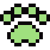
Le trappole aspettano il 25% in più prima di scattare.
Attesa delle trappole +25%
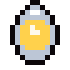
La tua mano fa il 30% di luce in più.
Luce della mano +30%
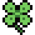
In ogni piano c'è un oggetto in più da trovare.
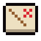
A ogni piano la mappa mostra subito le stanze segrete e le stanze dorate.
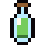
Le pozioni a tempo durano il 25% in più.
Durata delle pozioni +25%
Compare nel cielo dopo un'impresa: uccidi il cavaliere prigioniero della stanza delle torture.
Chi ti colpisce da vicino prende 1 di danno.
Spine: danno a chi ti colpisce +1
Ogni colpo preso nel piano ti dà il 5% di danno in più, fino al 50%.
Quando perdi un , chi ti sta vicino prende 3 di danno.
Quando perdi un , il mana torna pieno.
Ogni boss sconfitto in questa discesa ti dà +1 massimo, fino a 3.
Danno ×1,6. Ma -2 massimi.
Danno ×1,6 massimi -2